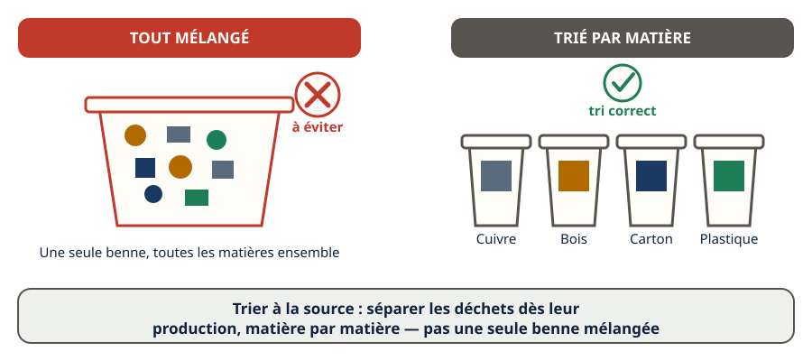
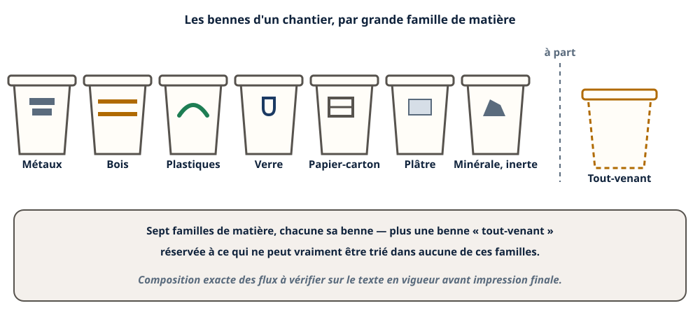
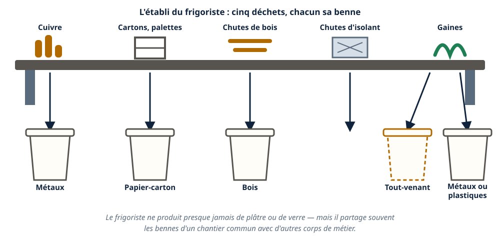
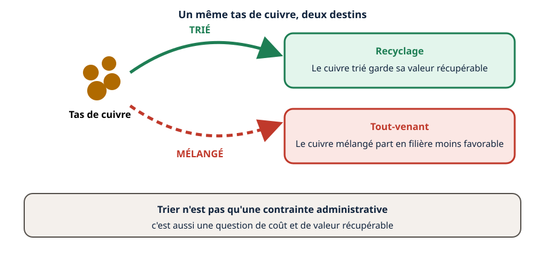
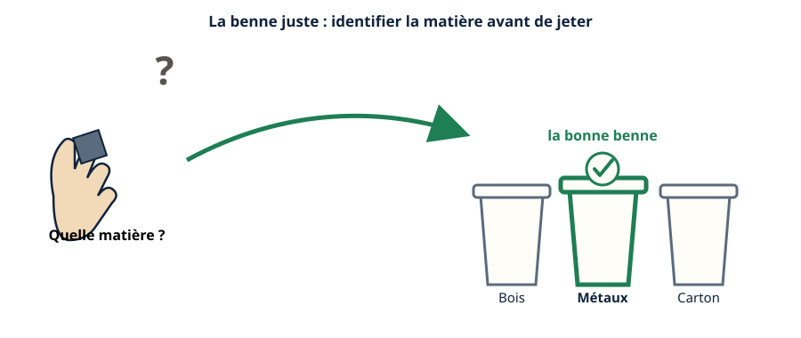
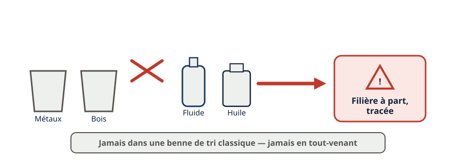
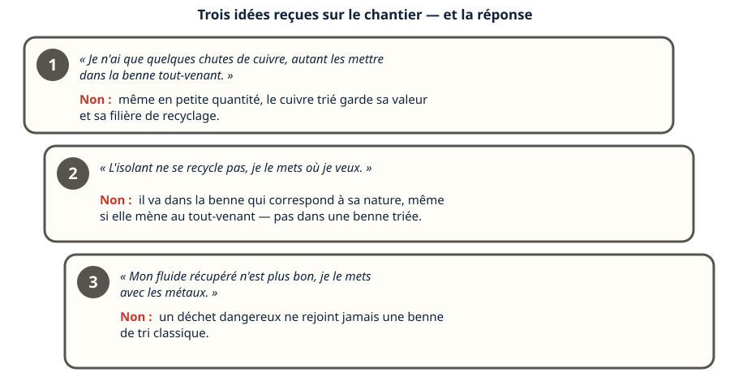
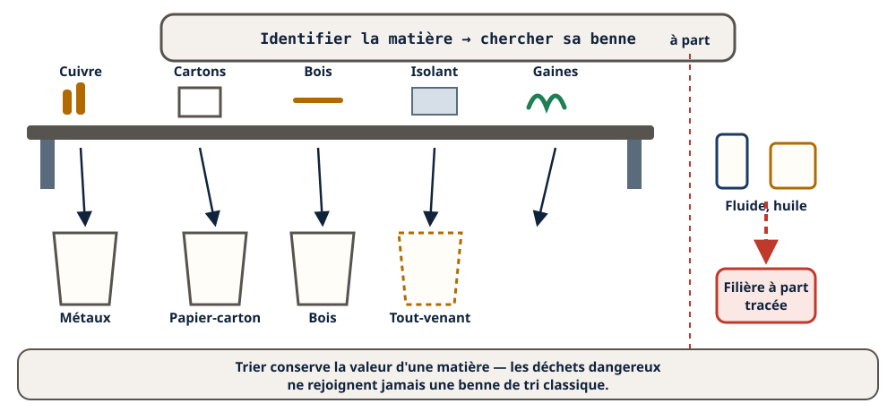

Mini-station commentée · 8 écrans et 4 questions · environ 10 minutes
Objectif
À la fin de la station, vous savez qu'un chantier de bâtiment doit trier ses déchets à la source, par matière, vous savez nommer les familles de déchets qu'un frigoriste produit vraiment, et vous savez choisir la bonne benne sur un chantier.
Chaque écran peut être expliqué à voix haute : le bouton « Écouter » commente ce que vous voyez. Rien n'est dit qui ne soit aussi écrit.
1 / 12
Écran 1 sur 8
Trier à la source : le principe
Sur un chantier, chaque matière suit sa propre filière : le cuivre n'est pas traité comme le bois, le verre n'est pas traité comme le plâtre. Trier à la source veut dire séparer les déchets dès leur production, matière par matière, plutôt que de tout mélanger dans une seule benne.

Une seule benne mélangée, contre plusieurs bennes triées par matière.
Écran 2 sur 8
Une famille de bennes, pas une seule
Un chantier de bâtiment organise ses bennes par grande famille de matière : métaux, bois, plastiques, verre, papier-carton, plâtre, et une fraction minérale ou inerte. Une benne « tout venant » reste réservée à ce qui ne peut vraiment être trié dans aucune de ces familles.

Sept familles, chacune sa benne — plus une benne à part pour ce qui ne se trie pas.
Écran 3 sur 8
Ce qu'un frigoriste trie vraiment
Sur son chantier, un frigoriste produit surtout : du cuivre (tuyauterie), des cartons et palettes (emballages), des chutes de bois (supports, palettes), des chutes d'isolant (souvent non recyclables, direction tout-venant), et parfois des gaines métalliques ou plastiques. Il ne produit presque jamais de plâtre ou de verre — mais il travaille souvent sur un chantier commun avec d'autres corps de métier, et partage leurs bennes.

Cinq déchets, chacun sa flèche vers la bonne benne.
Écran 4 sur 8
Pourquoi trier : deux raisons, pas une seule
Trier n'est pas qu'une contrainte administrative. Une matière triée peut être recyclée — le cuivre trié vaut plus que le cuivre mélangé à d'autres déchets. Une matière mélangée part le plus souvent en benne tout-venant, donc en filière moins favorable. Trier, c'est aussi une question de coût et de valeur récupérable.

Même matière, deux destins : la valeur récupérée, ou le coût du tout-venant.
Écran 5 sur 8
La benne juste : un réflexe avant de jeter
Avant de jeter un déchet, la question à se poser est toujours la même : « quelle est sa matière, et quelle benne lui correspond ? ». Se tromper de benne ne rend pas le tri caduc pour les autres déchets, mais dégrade la filière de la benne où l'erreur a été commise.

Le réflexe : identifier la matière, puis chercher sa benne.
Écran 6 sur 8
Le cas particulier : les déchets dangereux ne se mélangent jamais
Certains déchets d'un chantier de froid ne rentrent dans aucune des familles de tri « bâtiment » : les fluides récupérés non réutilisables, les huiles usagées. Ils suivent une filière à part, tracée (voir la station Déchets dangereux) — jamais la benne tout-venant, jamais une benne de tri classique.

Jamais dans une benne de tri classique — jamais en tout-venant.
Écran 7 sur 8
Le raisonnement : trois situations de chantier
« Je n'ai que quelques chutes de cuivre, autant les mettre dans la benne tout-venant. » → Non : même en petite quantité, le cuivre trié garde sa valeur et sa filière de recyclage.
« L'isolant ne se recycle pas, je le mets où je veux. » → Non : il va dans la benne qui correspond à sa nature, même si elle mène au tout-venant — pas dans une benne de matière triée.
« Mon fluide récupéré n'est plus bon, je le mets avec les métaux. » → Non : un déchet dangereux ne rejoint jamais une benne de tri classique.

Trois idées reçues, trois fois la même réponse : la matière décide.
Écran 8 sur 8
Bilan et le réflexe
Trier à la source sépare les déchets par matière, dès leur production.
Un chantier organise ses bennes par grande famille de matière, plus une benne tout-venant pour ce qui ne se trie pas.
Un frigoriste produit surtout du cuivre, des emballages, du bois et des chutes d'isolant.
Trier conserve la valeur d'une matière recyclable.
Les déchets dangereux ne rejoignent jamais une benne de tri classique.
Le réflexe : avant de jeter, identifier la matière, puis chercher sa benne.

Le réflexe résumé, de la matière à la bonne benne.
Question 1 sur 4
Sur un chantier de froid, où vont les chutes de cuivre ?
Rappel de l'écran 3 — l'établi du frigoriste.
Question 2 sur 4
Pourquoi trier les déchets d'un chantier plutôt que tout mélanger ?
Rappel de l'écran 4 — deux chemins, deux destins.
Question 3 sur 4
Un fluide récupéré non réutilisable : dans quelle benne du chantier va-t-il ?
Rappel de l'écran 6 — jamais avec les bennes de tri.
Question 4 sur 4
Un frigoriste hésite sur la benne d'un déchet inconnu. Que doit-il faire ?
Rappel de l'écran 5 — le réflexe de la benne juste.
Les correspondances de la station
Traçabilité (sous-ligne Fluidique & thermique, en préparation) — comment un déchet dangereux, une fois écarté, reste suivi jusqu'à sa filière.
Impact environnemental (en préparation) — ce que le tri change, au-delà du chantier.
Ces deux stations sont en préparation sur le plan du réseau.